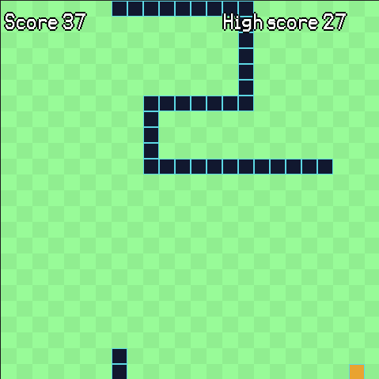
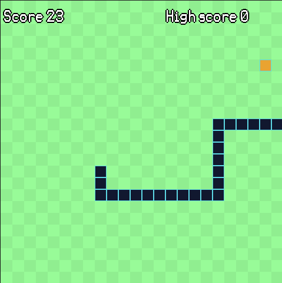

Welcome to the Python Snake Game! In this classic game, you control a snake and your goal is to eat as many apples as possible without crashing into the walls or your own tail. The game was developed using Pygame, a popular Python library for creating games, and features smooth gameplay and increasing difficulty as you progress. Are you ready to become the ultimate snake master?
How to Play
To play the Python Snake Game, simply use the arrow keys on your keyboard to control the movement of the snake. The snake will start off moving slowly, but will speed up as it eats more apples. Try to eat as many apples as possible without crashing into the walls or your own tail. As you progress through the levels, the game will become more challenging with increased speed and more obstacles. Can you beat the highest score?
How does it work?
The game starts by importing the necessary libraries and defining some global variables. The reset_game() function resets the game when the snake loses by setting the snake's length and position back to their starting values and generating a new direction for the snake. The snake class contains information about the snake's length, position, direction, and color. It also has functions to move the snake, draw it on the screen, and handle player input. The food class contains information about the food's position and color and has a function to randomly place the food on the screen. The drawGrid() function draws a checkerboard pattern on the screen and the score() function displays the player's current score and highscore on the screen. The game loop constantly updates the screen, moves the snake, checks if the snake has eaten the food, and handles player input. If the snake collides with the walls or itself, the game resets.
Download and Play
To download and play the Python Snake Game, simply click the button below. The game is free to download and play on Windows, Mac, and Linux. Have fun!